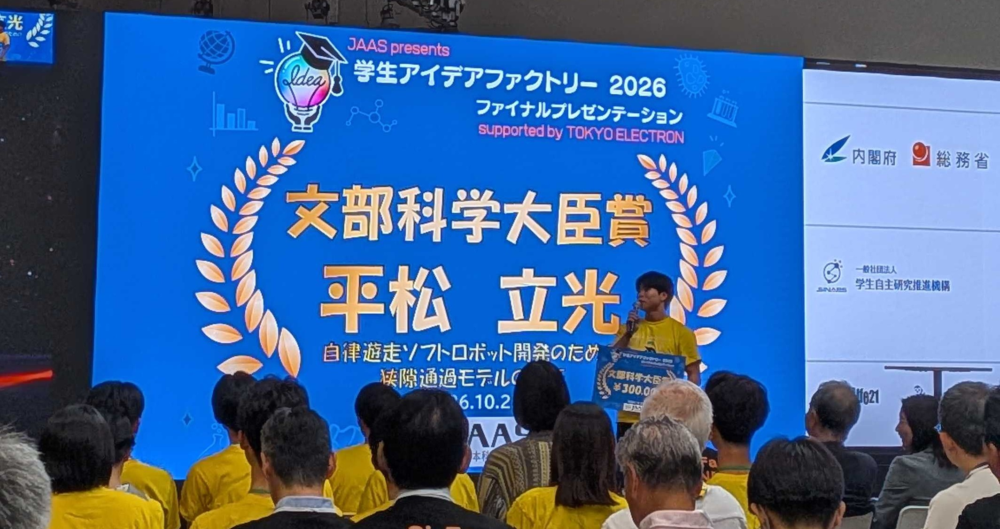

Opening our research to discussion, evaluation, and society.
We are developing aQtSOME, a molecular robot designed to respond to mechanical stimulation through changes in membrane shape. Alongside its scientific development, we consider how to conduct experiments responsibly, explain the limits of our findings, and welcome perspectives beyond our laboratory.
✦01
INTRODUCTION
Introduction
Molecular robotics seeks to assemble biological molecules into systems that exhibit selected functions of living organisms. Such research can offer new ways to understand biological mechanisms and may eventually lead to applications in medicine and biotechnology. It also raises questions about safety, responsible development, and how scientific claims are communicated.
Our proposed aQtSOME system brings together a giant unilamellar vesicle (GUV), the mechanosensitive channel MscL, and the actin-regulating protein INF2. Its intended mechanism links mechanical stimulation to localized membrane deformation. This is a research design, not a demonstrated autonomous device ready for practical use. We describe the proposed mechanism and the status of our experiments separately throughout this wiki.
✦02
RESEARCH SAFETY
Research Safety
Responsible laboratory practice
Working with biomolecules does not eliminate the hazards associated with chemical reagents or laboratory procedures. Understanding those hazards and handling waste correctly are essential to protecting researchers, other laboratory users, and the environment.
OUR ACTIVITIES
Before conducting experiments, we received explanations about reagent hazards and safe handling precautions under the guidance of our mentor, Professor Daisuke Inoue. We also disposed of experimental liquid waste appropriately under expert supervision.
Because our members come from several academic backgrounds, maintaining a common understanding of laboratory safety is an important part of working together. Safety procedures must continue to be reviewed as our experiments change.
✦03
RESEARCH TRANSPARENCY
Research Transparency & Public Engagement
Making our research understandable and open to scrutiny
Responsible research means communicating not only the appeal of an idea but also its assumptions, experimental evidence, and unresolved questions. We use this wiki to make our proposed mechanisms and research progress accessible, distinguishing what we hope to achieve from what has been experimentally verified.
Presenting our work beyond the laboratory is another way to make it open to questions and evaluation. In those settings, we need to explain why the research matters, how it could work, and which scientific and social issues remain.
EXTERNAL PRESENTATION & EVALUATION
Student Idea Factory 2026
Our team leader, Tatsuhi Hiramatsu, presented a research idea titled “Demonstration of a Narrow-Gap Passage Model for the Development of an Autonomous Soft Robot” at Student Idea Factory 2026. The presentation brought the concept before an audience and an external selection and review process.
His presentation received the Minister of Education, Culture, Sports, Science and Technology Award (MEXT Minister’s Award). We value this recognition as an encouraging assessment of the research idea and its communication. At the same time, an award for a research proposal does not independently establish the performance or safety of the proposed molecular robot.

▧Award ceremony photographImage to be added · assets/elsi/award.jpg
Student Idea Factory 2026 — Minister of Education, Culture, Sports, Science and Technology Award. Photograph: team archive (to be added).
We do not present external recognition as a substitute for reproducible experimental results. Rather, being able to explain and have our ideas evaluated by others is part of our commitment to research transparency.
✦04
INTERDISCIPLINARY DIALOGUE
Learning & Dialogue at Kyushu University
Bringing together different perspectives
aQtSOME is developed by eight students from the Faculties of Agriculture, Science, Engineering, and Pharmaceutical Sciences at Kyushu University. This mix of disciplines helps us discuss the system from different scientific viewpoints and explain technical choices to teammates outside our own fields.
UNIVERSITY PROGRAM
QREC — Change & Creation (C&C)
Our research idea has also received recognition and support through Kyushu University QREC’s Change & Creation (C&C) program. The program provides a setting for student projects to present their objectives and proposed approaches for review. We see this opportunity as part of an ongoing process of communicating our work and considering its significance beyond laboratory experiments.
Feedback from people with different expertise can reveal questions that a research team might otherwise overlook. We regard these conversations as an opportunity for reflection, not as proof that every concern has been resolved.
✦05
FUTURE APPLICATIONS & RISKS
Future Applications & Risks
Responsive molecular systems could eventually offer useful functions in areas such as targeted delivery or tissue engineering. These are possible future directions, not claims about what our current system can do. Laboratory demonstrations alone would not be sufficient to establish the safety of any practical application.
OUR ACTIVITIES
Within our team, we have discussed risks that could arise if autonomous molecular systems were developed for use outside controlled experiments. Our project has not yet reached the stage of a detailed application-specific safety assessment.
FUTURE CONSIDERATIONS
Questions that remain open
How can unintended activation by environmental stimuli be prevented?
How could a device be stopped, contained, or safely degraded after use?
What testing would be needed to evaluate effects on people and ecosystems?
Answering these questions would require further research and evaluation appropriate to any proposed use.
✦06
CONCLUSION
Conclusion
We believe that the development of new molecular technologies should be accompanied by careful experiments, clear reporting, and willingness to engage with questions from outside the research team.
For aQtSOME, this means learning safe laboratory practices, openly separating hypotheses from verified results, explaining our ideas to wider audiences, and considering risks before future applications are pursued. Recognition such as the MEXT Minister’s Award encourages us to continue this work with both scientific curiosity and responsibility.